1 Azure DevOps Engineer Expert Certification (AZ-400)
Exam Guide - Response Types
There are ~50-55 Questions
You can afford to get roughly 12-14 questions wrong
Format of Questions
- Multiple Choice
- Multiple Answer
- Drag and Drop
- Yes and No
- 1 Lab with about 8 questions
1 Introduction to DevOps
DevOps is an approach that brings together software development (Dev) and IT operations (Ops) with the goal to enhance the speed and reliability of software delivery.
It focuses on continuous improvement, automation, and collaboration between teams that were once siloed, aiming to shorten the time from development to operation.
The process includes frequent code versions, which allows for incremental improvements to applications and systems.
The ultimate goal of DevOps is to create a culture and environment where building, testing, and releasing software can happen rapidly, frequently, and more reliably.
Why DevOps?
DevOps eliminates the inefficiencies, miscommunications, and delays that arise from the traditional gap between development and operations teams.
It creates a collaborative culture that accelerates and improves software delivery.
Key Challenges Addressed by DevOps:
- Miscommunication and Collaboration Gaps: Enhances communication and collaboration, reducing misunderstandings and accelerating the release process.
- Conflicting Goals: Aligns the goals of Dev and Ops teams towards quick, reliable, and high-quality software delivery.
- Manual Processes and Bottlenecks: Advocates for automation to decrease manual effort, errors, and delays.
- Streamlined Processes: Automation leads to fewer errors, shorter deployment times, and improved software quality.
The Role of a DevOps Engineer:
A DevOps engineer facilitates this collaboration and automation, focusing on:
Continuous Integration and Continuous Delivery (CI/CD): Establishing pipelines that automate code integration, testing, and deployment, ensuring rapid, reliable software releases.
Infrastructure as Code (laC): Managing and provisioning infrastructure through code to increase efficiency and consistency.
Monitoring and Operations: Implementing monitoring solutions to track application and infrastructure performance, ensuring high availability and reliability.
Transition to Cloud Infrastructure: Many organizations are transitioning to cloud infrastructure (AWS, Google Cloud, Azure) to cut costs and improve manageability, offering intuitive tools for network and security settings but necessitating knowledge of platform-specific features.
Tools and Technologies:
Version Control (e.g., Git): Essential for managing code changes and facilitating team collaboration.
Use Agile and Lean Techniques: For planning, sprint isolation, and capacity management.
Containerization (e.g., Docker): Enables scalable deployments with lightweight containers that are faster and simpler to configure than traditional virtual machines.
Orchestration (e.g., Kubernetes): Efficiently manages containerized applications at scale
CI/CD Tools (e.g., Jenkins, GitLab CI): Automate the software delivery process, from code integration to deployment.
laC Tools (e.g., Terraform, Ansible): Automate the provisioning and management of infrastructure.
Monitoring and Logging (e.g., Prometheus): Provides insights into application performance and operational health.
Public and Hybrid Clouds streamline operations, offering scalable infrastructure with laas for seamless app migration and PaaS to enhance productivity through sophisticated tools.
Examples of DevOps technologies across different DevOps stages include:
Planning:
Azure Boards, GitHub, Atlassian Jira
Continuous Integration: Azure Repos, GitHub Repos, SonarQube, Selenium, OWASP ZA, NuGet,
Continuous Delivery: Azure Pipelines, GitHub Actions, Bicep, Terraform, Jenkins, RedHat Ansible, Chef, Puppet
Operations: Azure Monitor, Azure Automation, Microsoft Power BI
Collaboration and feedback: Azure DevOps Wikis, GitHub Wikis, GitHub Discussions, Microsoft Teams,
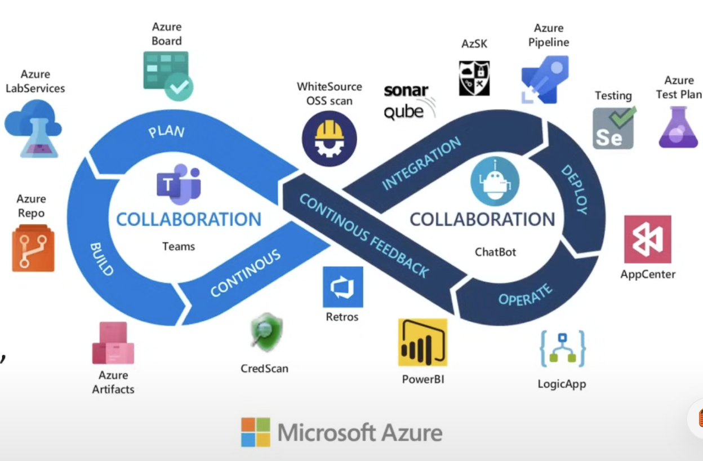
DevOps vs Traditional IT
Time
- DevOps teams spend one-third more time improving systems to avoid tech issues than traditional IT.
- Less time is needed for administrative tasks because DevOps uses more automated tools and helpful scripts.
- This saved time allows for a 33% increase in enhancing their tech infrastructure.
- They also have 15% more time for learning and training, boosting their
Speed and data
- DevOps groups are typically small and adaptable, driven by creativity and speed.
- One of the main goal of DevOps is agility, aiming for swift completion of tasks.
- Traditional IT operations typically have less feedback data, focusing only on the immediate task.
- IT operations often have to handle unexpected downstream issues they didn't see coming.
- Cloud DevOps is more effective in delivering business applications due to its quick pace.
- Traditional IT must strive to keep up with the rapid changes and demands of the business world.
Recuperation and crunch time
DevOps teams focus on readiness for failures and have strategies like ongoing testing and real-time alerts.
These strategies mean they can address issues quickly and keep systems running smoothly.
Traditional IT may need more time to recover from setbacks because they might not have these proactive measures in place.
Fast recovery in DevOps is often helped using automated systems and flexible infrastructure setups.
Software distribution
- DevOps teams take roughly 37 minutes to deploy software.
- Traditional IT operations typically need about 85 minutes for the same task.
- This indicates DevOps teams can release software more than twice as quickly as traditional IT teams.
| Aspect | DevOps Advantage |
|---|---|
| Product Reliability | Reduced likelihood of failure |
| Adaptability | Enhanced flexibility and support |
| Market Responsiveness | Decreased time to market |
| Team Productivity | Greater efficiency in teams |
| Vision Clarity | More defined product vision within teams |
2 Agile
Agile is a philosophy in software development that emphasizes incremental progress, collaboration, and flexibility. It revolves around the idea of breaking down large projects into smaller, manageable sections called iterations or sprints.
Teams work in these short bursts to produce tangible results regularly, allowing for frequent reassessment and adjustment.
This approach enables a quick response to change and promotes continuous improvement, both in the product and the process used to create it.
The term "agile methodology" refers to the specific frameworks and practices that embody the Agile philosophy, such as Scrum, and Kanban.
These methodologies provide the structure and tools for teams to execute Agile principles effectively.
They include techniques for planning and tracking progress, such as stand-up meetings, sprints, and visual boards, all designed to enhance team coordination and project transparency.
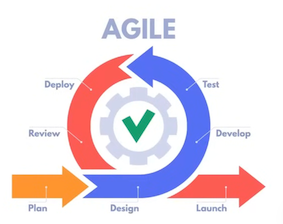
Agile Development
Diligent Backlog Refinement: This means organizing the list of upcoming work, prioritizing the most important tasks, and clarifying them.
Product owners are key in preparing for future sprints by providing clear goals.
Integrating Early and Often: By using Continuous Integration/Continuous Delivery (Cl/CD), teams automate their workflows, which speeds up coding, testing, and deployment. This helps catch and fix problems early.
Minimizing Technical Debt: Just like unwanted financial debt, technical debt happens when taking shortcuts, which may later require code fixes.
It's important to find a good mix of adding new features and fixing these issues, needing careful planning and fixing these issues, needing careful planning and discipline.
Agile Development encompasses various methods that follow the Agile Manifesto's core ideas.
It's about teams working together, managing themselves, and using practices that best suit their project's needs to gradually improve their software.
In agile development, teams aim to produce fully working and high-quality parts of the software at the end of every sprint.
This means they must write code, test it, and make sure everything is of good quality within each sprint's short timeframe.
The key success factors for Agile development teams:
- Diligent backlog refinement
- Integrating early and often
- Minimizing technical debt
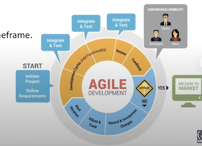
Scrum
Scrum is an Agile framework designed for managing complex projects by breaking them down into small, manageable tasks completed in short phases called sprints.
Key roles in Scrum:
Key roles in Scrum:
- Product Owner: Guides what and why the team builds, prioritizes the work backlog.
- Scrum Master: Facilitates Scrum processes, supports team improvement, and removes obstacles.
- Development Team: Engineers the product, ensuring its quality.
In Scrum, a team self-manages its sprint tasks with daily stand-up meetings to ensure progress and address impediments. They track work using a task board and a sprint burndown chart, and at the sprint's end, they showcase their increment in a review and identify improvements in a retrospective.
Scrum's short, repeatable cycles facilitate continuous learning and adaptation, making it a practical framework for teams adopting Agile principles.
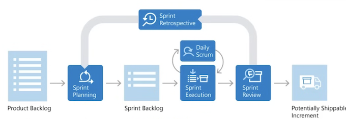
Kanban
Kanban is an Agile methodology focused on visualizing work, limiting work in progress, and maximizing efficiency (or flow).
Kanban boards are used to display work at various stages of → the process using cards to represents tasks and their stages, highlighting work in progress and facilitating team flexibility.
Cumulative Flow Diagrams (CFDs) visually track a project's workflow over time, showing task distribution across stages. The horizontal axis represents time, and the vertical axis represents task volume, with each color marking a different work stage.
CFDs highlight trends, progress, and bottlenecks.
Parallel colored areas indicate balanced workflow; bulges suggest bottlenecks needing attention for smooth project continuation.
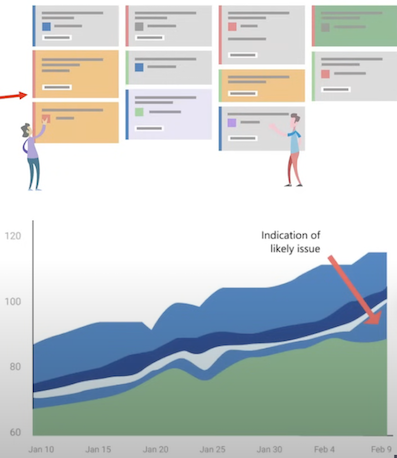
Scrum vs Kanban
Scrum and Kanban in Agile development
While broadly fitting under the umbrella of Agile development, Scrum and Kanban are quite different.
- Scrum focuses on fixed length sprints, while Kanban is a continuous flow model.
- Scrum has defined roles, while Kanban doesn't define any team roles.
- Scrum uses velocity as a key metric, while Kanban uses cycle time.
Teams often blend Scrum and Kanban features to optimize their workflow.
They continuously refine their approach to find the best fit, focusing on simplicity and regular value delivery to users.
Flow Metrics
Velocity
Velocity in Azure DevOps is a metric that tracks the amount of work a team completes during a sprint, helping teams estimate how much work they can handle in future sprints.
It's represented in a chart that visualizes work items completed over several sprints, offering insights into the team's work patterns, efficiency, and consistency.
By analyzing velocity, teams can adjust their planning for better predictability and productivity.
Consistent velocity metrics can help in identifying the impact of process changes and guiding strategic decisions to enhance overall team performance.
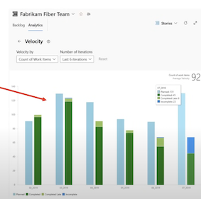
Sprint burn down
Sprint burndown chart
The sprint burndown is a graph that plots the daily total of remaining work, typically shown in hours
The burndown chart provides a visual way of showing whether the team is on track to complete all the work by the end of the sprint.
It also helps in identifying any bottlenecks or issues in the workflow that may need attention before the sprint’s end.
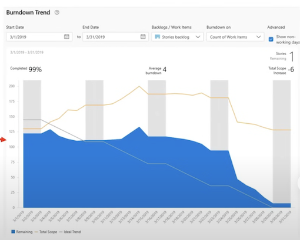
Lead time and Cycle time
The Lead Time and Cycle Time widgets indicate how long it takes for work to flow through your development pipeline.
- Lead time measures the total time elapsed from the creation of work items to their completion.
- Cycle time measures the time it takes for your team to complete work items once they begin actively working on
- The following diagram illustrates how lead time differs from cycle time.
- Lead time is calculated from work item creation to entering a completed state.
- Cycle time is calculated from first entering an In Progress or Resolved state category to entering a Completed state category.
These measures help teams plan, spot variations in efficiency, and identify potential process issues. The lower the lead and cycle times, the faster the throughput your team has.
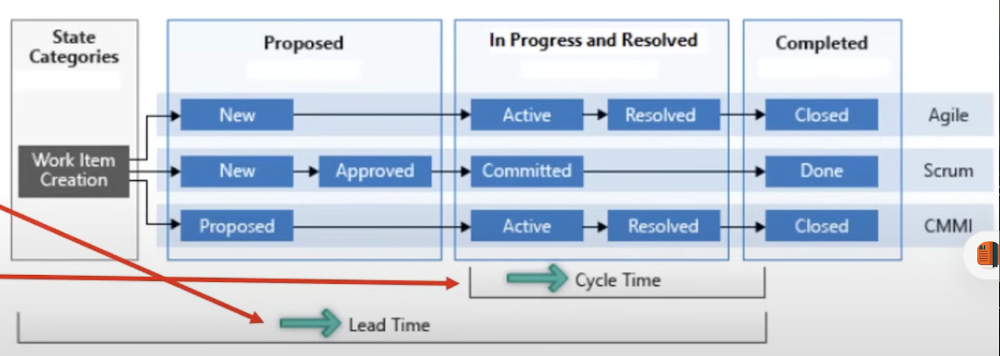
Azure Boards
Azure Boards is a web-based service designed for planning, tracking, and discussing work throughout the development process, supporting agile methodologies for a customizable and efficient workflow.
Key Hubs in Azure Boards
Azure Boards includes several key hubs, each serving distinct project management needs:
Work Items Hub: Manage work items based on specific criteria.
- Boards Hub: Visualize workflow using cards, ideal for Kanban.
- Backlogs Hub: Plan and organize work items, including backlogs for project and portfolio management.
- Sprints Hub: Handle sprint-specific work items, incorporating backlogs for project and portfolio management.
- Queries Hub: Generate custom work item lists and perform bulk
- Delivery Plans Hub: Track cross-team deliverables and dependencies in a calendar view.
- Analytics Views Hub: Create Power BI reports for detailed project analysis.
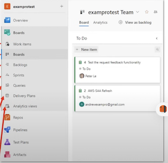
Key benefits of Azure Boards
- Scalable Simplicity: Easy to start with predefined work item types, scalable for growing teams.
- Visual Tools: Visualize progress with Kanban boards, scrum boards, and delivery plans.
- Customization: Configure boards, taskboards, and plans, including custom fields.
- Built-in Communication: Capture real-time communication and decisions within work item forms.
- Cloud Storage: Support for rich text, inline images, attachments, and comprehensive change history.
- Efficient Search and Notifications: Tools for quick work item searching and customizable alerts.
- Dashboards and Analytics: Access to dashboards and Analytics service for reporting.
Integration and Support
- GitHub and Office Integration: Connects with GitHub repositories and supports import/export with Microsoft Office.
- Autonomous Teams Support: Tailors to independent teams, integrates with Microsoft Teams and Slack, and offers a variety of marketplace extensions.
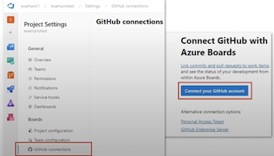
Traceability
Traceability allows tracking connections and dependencies among different parts of a software system. It helps teams grasp the effects of changes, handle risks, and comply with regulations.
Defining and managing requirements
- A key part of traceability is documenting and overseeing requirements effectively.
- Azure DevOps has tools like Azure Boards for handling requirements and tracking their progress, linking requirements to related items like tasks or bugs.
- This tracking clarifies each requirement's progress and its influence on the project.
Version control and change management
For traceability, a solid version control system to monitor modifications to code and files is essential. Azure DevOps's Git repositories let developers manage their work efficiently.
By using branches for features or releases, you can track changes and understand their role in the project's bigger picture.
Building and release management
Traceability must include build and release processes. Azure Pipelines facilitates building, testing, and deploying apps, linking build artifacts and code changes to specific tasks, showing what changes made it into each
Test management and quality assurance
For software quality, traceability is crucial. Tools like Azure Test Plans support detailed test management. Linking test cases to requirements or user stories shows how well the testing process covers the initial needs, ensuring thorough validation.
Auditing and compliance
- Traceability also supports meeting standards and regulations.
- Azure DevOps's auditing features track and log changes, providing details on who changed what and when, supporting accountability and regulatory compliance.
Custom Azure Boards dashboards
Centralize with Custom Dashboards
Custom dashboards in Azure Boards are crucial for presenting a comprehensive overview of your project's status and key metrics.
By tailoring these dashboards to highlight crucial data, your team can streamline workflows and improve decision-making.
Customize with Widgets
Widgets are the heart of Azure Boards dashboards, presenting diverse data from progress charts to work item queries. Select and tailor widgets that best display the team's critical information, ensuring essential insights are readily accessible.
Monitor Backlogs with Query Widgets
Incorporate query widgets to filter and display work items based on defined criteria, like outstanding tasks per team member.
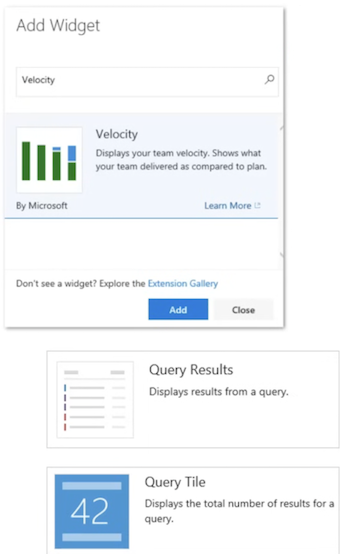
Monitor Backlogs with Query Widgets
Incorporate query widgets to filter and display work items based on defined criteria, like outstanding tasks per team member.
This enables efficient task management and helps in setting clear priorities.
Custom Azure Boards dashboards
Track Progress with Burndown Charts
Use burndown chart widgets to graphically track project progress, helping to identify any delays. Regular review of these charts keeps the team's progress aligned with project goals.
Visualize Performance with Charts
Enrich your dashboard with charts that convey performance metrics, such as bug trends or team velocity, providing a clear picture of the team's dynamics and highlighting areas for improvement.
Enhance Team Engagement
Share dashboards with your team and stakeholders to offer a live view of the project's status, fostering a culture of transparency and collective accountability.
Custom Azure Boards dashboards
Track Progress with Burndown Charts
Use burndown chart widgets to graphically track project progress, helping to identify any delays. Regular review of these charts keeps the team's progress aligned with project goals.
Visualize Performance with Charts
Enrich your dashboard with charts that convey performance metrics, such as bug trends or team velocity, providing a clear picture of the team's dynamics and highlighting areas for improvement.
Enhance Team Engagement
Share dashboards with your team and stakeholders to offer a live view of the project's status, fostering a culture of transparency and collective accountability.
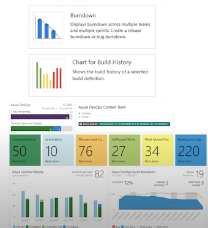
Wikis for Documentation
Wiki offers a collaborative space for team members to compile and share crucial details about a DevOps project.
Start with an Overview Page: Begin by setting up an overview page. This should introduce the project, its goals, and the team working on it.
Mention the technologies, tools, and methods your project employs, keeping it broad but informative.
Detail Project Requirements: Dedicate pages to outline the project's
Break down what the project needs to do (functional requirements) and how it should perform (non-functional requirements), using clear and achievable language.
Detail Project Requirements: Dedicate pages to outline the project's requirements.
Break down what the project needs to do (functional requirements) and how it should perform (non-functional requirements), using clear and achievable
Add user stories, what needs to be true for the project to be considered complete (acceptance criteria), and any other elements that rely on each other (dependencies).
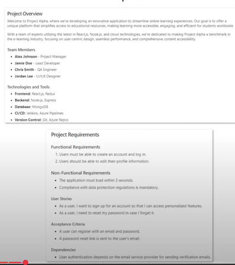
Architecture and Design Documentation: Use the wiki to detail the project's structure and design.
Make a separate page for each part, whether it's a component, a larger section, or a service.
To help visualize how these parts interact, include diagrams like UML (Unified Modeling Language) or system architecture sketches.
Encourage Team Input: Get your team involved in the documentation process.
Allowing everyone to edit and update wiki pages not only promotes teamwork but also helps keep the information current.
Make sure to use the wiki's version tracking to monitor changes and roll back if needed.
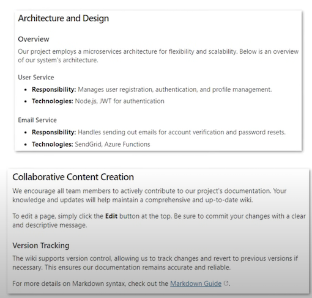
Process Diagrams for Documentation
Process diagrams are visual guides that show the steps in a process, making it easier to see how everything connects, especially in DevOps
Pinpoint Essential Processes: First, identify the main processes in your DevOps project, such as managing source code, integrating changes continuously, testing automatically, deploying, and monitoring.
Break down these processes into smaller parts.
Make Flowcharts or BPMN Diagrams:
Use software like Microsoft Visio, draw.io, or lucidchart, to create diagrams that map out the process.
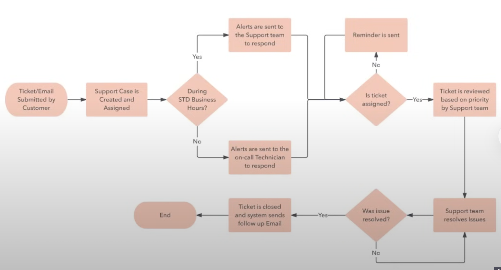
Detail What Goes In and Comes Out: For every step in your process, note down what you need to start (inputs) and what you expect to get out of it (outputs).
This might be code, test results, deployment packages, or anything else relevant. It's important to show how each step is linked to the next.
Clarify Who Does What: Make sure your diagrams indicate who is responsible for each step.
This removes confusion and makes sure everyone knows their responsibilities.
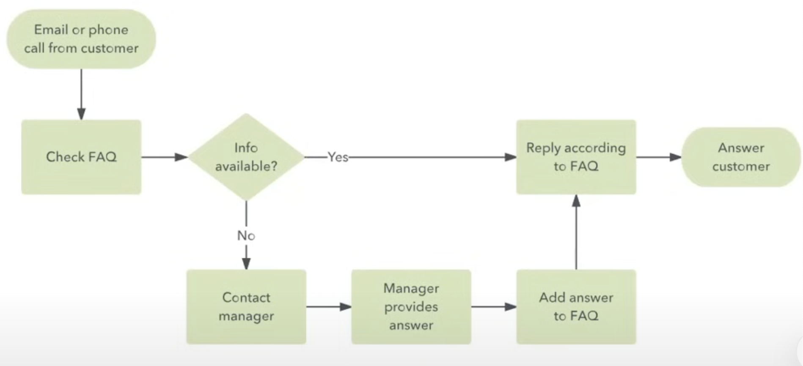
Configure release documentation
Release documentation is a cornerstone for the successful deployment of software releases within Azure DevOps, focusing on the non-code aspects that define the scope, quality, and functionality of the release.
Key Elements of Release Documentation
1 Release Notes: These should highlight what's new, what issues have been resolved, and any enhancements made, as well as outline any modifications to settings and their effects on existing features.
2 Installation Guides: Provide clear, detailed instructions for the setup process, including a list of required software and system prerequisites, and post-installation
3 Configuration Changes: Document updates to configuration settings, clarifying any default settings and essential changes.
4 Change Log: Keep an accurate record of commits or work items in the release, using a consistent tracking method.
5 Rollback Plan: Have a clear, predefined plan for reverting to an earlier software version if necessary.
Creating Release Documentation in Azure DevOps
Azure Repos
- Store your markdown or text files alongside your code.
- Version control your documentation for consistency and traceability.
Azure Pipelines
- Automate the generation of changelogs and other documentation during the build and release processes.
Artifacts
Attach generated documentation to specific builds or releases as downloadable artifacts.
Wiki
# Release Notes - Version 2.1.0
## New Features:
- Feature A: Description and how to enable it.
- Feature B: Steps for configuration.
## Enhancements:
- Improved performance of X functionality.
- Enhanced security protocols for Y process.
## Configuration Changes:
- Updated default settings for Z.
- New environmental variables to set for feature A.
## Known Issues:
- Issue 1: Temporary workaround.
- Issue 2: Scheduled for fix in the next release.
## Rollback Plan:
- Steps to revert to version 2.0.3 in case of issues.
For installation guidance, please refer to the [Installation Guide](link-to-guide).
API documentation
Steps to Generate API Documentation:
Generate Documentation:
- Utilize Visual Studio to generate API documentation. Access this feature via the Build menu.
- Use tools like Swagger, Azure API Management, or OpenAPI for automatic documentation generation from your codebase.
Documenting Endpoints:
- Clearly define and describe each API endpoint, detailing the purpose and functionality.
- Include information on request and response formats, as well as any authentication requirements.
Selecting Formats and Styles:
Decide on your output format and style, ensuring it's readable and accessible for your target
Integration and Automation:
Integrate documentation generation into your continuous integration and deployment pipelines within Azure DevOps.
API Documentation - Version 1.2.3
### Endpoints:
- POST /api/login
- Description: Authenticates users and returns an access token.
Request Body:
...
"username": "user@example.com",
"password": "password123"
...
- Response:
Status: 200 0K
{
"token" : "eyJhbGciOiJIUzIlNiIsInR5cCI6IkpXVCJ9..."
}
- GET /api/users
- Description: Retrieves a list of users.
- Response:
Status: 200 0K
[
"id":
{"id": "1", "name": "Jane Doe"},
{"id": "2", "name": "John Smith"},
]
API documentation
- Consistency: Use a consistent format for all API endpoints to make the documentation easy to follow.
- Clarity: Ensure that descriptions are clear and concise, avoiding ambiguity.
- Version Control: Manage your API documentation within Azure Repos for versioning and historical tracking.
- Regular Updates: Keep the documentation current with every release, deprecating outdated information promptly.
- Feedback Mechanisms: Include a process for developers and users to provide feedback on the documentation for continuous improvement.
By focusing on these elements, your API documentation will be an invaluable resource for your team and stakeholders, supporting the effective use and integration of your software's API.
Automate Git History documentation
With the rise of DevOps and Git's stronghold in version control, the manual slog of updating docs has given way to automation. Now, developers can create dynamic documentation straight from their Git
Prerequisites:
- A Git repository, hosted on platforms like GitHub or Azure Repos.
- An Azure DevOps account connected to this repository.
Automating Documentation with Azure Pipelines:
Step 1: Set Up Your Pipeline
- In Azure DevOps, select "Pipelines" from the project menu and click "New Pipeline".
- Pick your code repository's platform and the repository itself.
- Choose the main branch as the source for your docs.
- Tailor your pipeline settings— pick the right agent and decide when this pipeline should run.
Step 2: Build the Code
- Insert a build task into your pipeline to compile your code. E.g., NET Core, Node.js, Python, etc.
- Fine-tune this task to match your project —this might mean different commands or scripts, depending on what you're building.
- Confirm a successful build before moving on.
Step 3: Generate the Documentation
- Post-build, select a tool like DocFX, tailored for .NET projects, to parse your Git history into documentation.
- Add a new task in your pipeline for DocFX
- Set this up with the correct paths and configurations, and let it craft your docs.
- task: DotNetCoreCLI@2
inputs:
command: 'build'
projects: '**/*‚csproj'
arguments: '--configuration Release'
Step 4: Publish Your Work
- Once your documentation is ready, pick a spot to publish it. This could be Azure Blob Storage, an FTP server, or Azure Pipelines' own artifact storage.
- Add a publishing task to the pipeline and configure it with the necessary details.
- Deploy this task and see your documentation go live.
Step 5: Make It Automatic
- To really put your feet up, configure triggers in Azure Pipelines to run your documentation job on autopilot.
- You can set these to activate on new commits, merges, or even on a schedule.
- Once set, your documentation updates as your code does— no extra input needed.
What are Webhooks?
How Webhooks Work
Event Occurs: A specific event triggers the webhook.
This event could be an update, a deletion, or some activity like a user action or system event.
HTTP Request: The source site makes an HTTP request to the webhook's URL. This request can be a POST (most common), GET, or any other HTTP method, depending on what was configured.
Action Taken: The server that receives the webhook does something with the information, like updating a database, notifying users, or initiating other workflows.
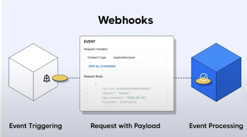
Common Uses of Webhooks
Automating Workflows: Webhooks can automatically update a testing server, deploy applications, or update a backup.
Notifications: They can notify other systems or services in real-time when events happen.
For example, if someone posts a comment on a blog, a webhook could automatically tweet the comment or send an email.
Integrations: Many services offer webhooks to integrate with other services without requiring a custom interface.
For example, PayPal uses webhooks to notify your accounting software when you receive a payment.
Advantages of Webhooks
Efficiency: Webhooks offer a more efficient method for receiving data than continually polling a service for updates. They push data as it becomes available, minimizing latency and reducing the amount of bandwidth used.
Real-Time Processing: Webhooks can facilitate real-time data processing by triggering a reaction immediately after the event
Configure notifications with Webhooks
Webhooks in Azure DevOps trigger HTTP notifications to a URL for events like code updates or build completions, facilitating integration with other systems.
Select the Event:
- Navigate to the 'Project Settings' and then to the 'Notifications' tab.
- Identify the event you want to
New Subscription:
- Click on 'New subscription' to create a new webhook.
- Select the specific event you want, such as 'Build completes.'
Configure Action:
Define the action that should happen when the event occurs. This typically involves sending a notification to an external service.
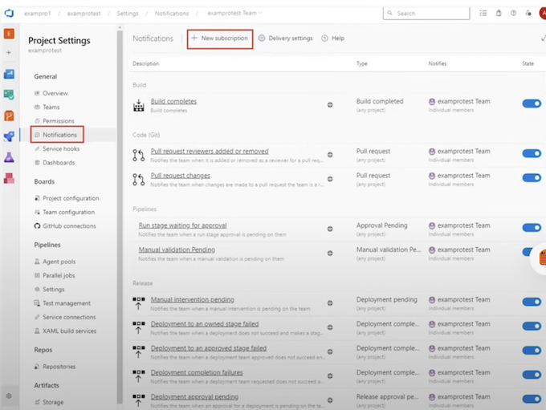
Customize Your Webhook:
You can customize what information you send along with the webhook. Azure DevOps allows you to send specific data related to the event.
Authentication (if needed):
If your endpoint requires authentication, you will need to configure the appropriate headers or payload with authentication tokens or keys.
Test the Subscription:
Once configured, it's crucial to test the webhook to ensure it works as expected. Azure DevOps typically allows you to test it through the interface.
Monitor and Adjust:
After setting up, monitor the notifications and ensure they're firing correctly. You might need to troubleshoot or adjust settings if you're not receiving the notifications as expected.
Version Control Systems (VCS)
Version Control Systems (VCS) are designed to track changes or revisions to code.
The most popular VCS is Git.
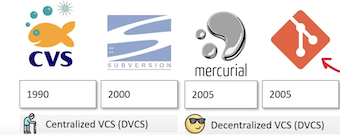
DVCS (and git specifically) became very popular for many reasons:
- • Full local history and complete a copy of the repo locally
- • Straightforward and efficient branching and merging
- • Better performance, Improved fault tolerance, flexible workflows, work fully offline
Version Control normally represents revisions being represented as graph like structure. So you'll here terms like tree, trunk and branches
Git
Git is a distributed version control systems (DVS) created by Linus Torald
Each change of your code (git commit) can be captured and tracked throughout the history of your project (git tree)
Common Git Terms
- Repository: Represents the logical container holding the codebase
- Commit: Represents a change of data in the local repository.
- Tree: Represent the entire history of a repo
- Remote: A version of your project hosted elsewhere, used for exchanging commits.
- Branches: Divergent paths of development, allowing isolated changes.
- Main (formally known as master) the most common name for the default branch
- Clone: Creates a complete local copy of a repository, including its history.
- Checkout: Switches between different branches or commits in your repo.
- Pull: Downloads changes from a remote repository and merges them into your branch.
- Push: Uploads your local repository changes to a remote repository.
- Fetch: Downloads data from a remote repo without integrating it into your work.
- Reset: Undoes local changes, with options to unstage or revert commits.
- Merge: Combines multiple commit histories into one.
- Staging files: Prepares and organizes changes for a commit.
- Commit: Saves your changes as a snapshot in the local repository.
- Add: Adds changes to the staging area for the next commit.
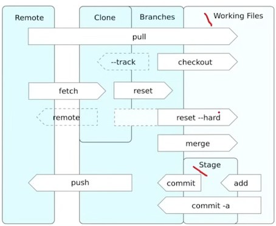
Version Control Services (VCS)
Version Control Services (VCS) are fully managed cloud services that hosts your version controlled repositories.
- These services often have additional functionality going beyond just being a remote host for you repos.
- Git is the most popular and often the only choice for VCS. Often we call these services "git providers"
Github
Owned by Microsoft. The most popular VCS offering due to ease of use and being around the longest. Github is primarly where open-source projects are hosted and offer rich functionality such as Issues Tracking, Automation pipelines and a host of other features.
GitLab
GitLab was an emerging competitor to Github and at the time had unique features such as a CI/CD pipeline and improve security measures.
BitBucket
- Owned by Atlassian. Originally hosted Mercurial, later adding Git and then sunsetting Mercurial.
- Tight integration with Atlassian's industry standard agile project management software JIRA.
- Larger organizations commonly use BitBucket because of JIRA adoption.
SourceForge
One of the oldest places to host your source code and was the first to free of charge to open-source projects
Git vs Github
| Git | GitHub | |
|---|---|---|
| Nature | Distributed Version control system (DVCS) | Version Control as a Service (VCaaS) |
| Functionality | Manages source code history | Provides cloud storage for Git repositories |
| Access | Local system installation | Accessed via web interface |
| Scope | Local repository management | Online collaboration and repository hosting |
| Collaboration | Local changes, requires manual sharing | Integrated tools for collaboration (issues, PRs) |
| Usage | Command-line interface | Graphical interface and additional features |
Github Repo
A Github Repo is your git repo that you push upstream to GitHub
GitHub allows you access and manage your git repo with several functionality
From your Github repo page you can:
- • View different branches
- • View tags
- • View commit history
- • Explore repo's files
- • View releases
- • See codebase language breakdown
- • View the top level markdown files
- • Readme.md
- • Licence.md
You can perform actions such as:
- • Pinning
- • Watching
- • Forking
- • Starring
- • Cloning (downloading)
Git commit
A Git Commit represent incremental changes to a codebase represented with a git tree (graph) at a specific time.
A git commit contains:
- • Additions, modifications and deletions of files
- • Additions and deletions of file contents.
- Not the whole files themselves.
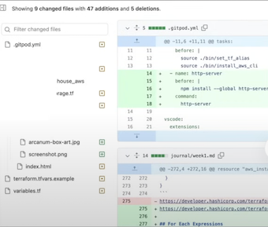
Each Commit has a SHA hash that acts as an ID : Eg. 661a91ad3b66926c4591f9d3c73c087906945f3b
You can use this Commit SHA to checkout specific commits.
Git does not store the whole files in each commit but rather the state of changes. This greatly reduces the file size. To the developer the files will appear whole
Components of Git Commit:
- Commit Hash: A unique SHA-1 hash identifier for the commit.
- Author Information: The name and email of the person who made the commit.
- Commit Message: A description of what changes the commit contains.
- Timestamp: The date and time when the commit was made.
- Parent Commit Hash(es): The SHA-1 hash of the commit(s) this commit is based on.
- Snapshot of Content: A snapshot of the project at the time of the commit (not the actual files, but references to them).
Commit messages are often written in a tool as its more convenient to quickly add, remote files, audit changes
VS Code has that ability via the Source Control window
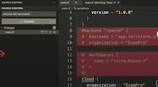
Common Git Commands you should know:
You need add or remove files to be stage changes
# Files to be staged
git add my-file
git add . # add all files
git rm my-other file # remove a specific file
# Commits staged changes with a message
git commit -m "Commit message"
# Automatically stages all tracked, modified files before the commit
git commit -a -m "Commit message"
# Modifies the most recent commit
git commit --amend
# Creates an empty commit, useful as a placeholder
git commit -m "Initial commit" --allow-empty
# Commits with a specified author.
git commit -m "Message" --author="Author Name <email@example.com>"
# checkout to a specific commit based on SHA hash
git checkout 661a91ad3b66926c4591f9d3c73c087906945{3b.
Git Branch
A git branch is a divergence of the state of the repo.
You can think of branches as being copies of a point in time that have been modified to be different.
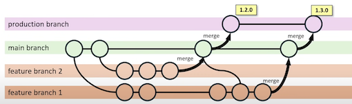
This type of workflow is is very close to GitHub Flow
You can have branches for:
Specific environments: eg. Staging, development, production
Specific to developers: eg. andrew, bayko, cindy
branches per feature: eg. payment-gateway-feature
Branches per bug eg. hotfix-blank-hoempage
Common git branch commands you should know
#Lists all local branches git branch
#Creates a new branch git branch [branch-name]
# Checkout (switch to) a branch
git checkout [branch-name]
# Create and checkout a branch
git checkout -b [branch name]
# Deletes a branch
git branch -d [branch-name]:
# Renames a branch
git branch -m [old-name] [new-name]
# Lists both remote and local branches
git branch
A common workflow for developers is to create a branch or a feature, and they need to push their branch upstream to the remote name origin.
git checkout -b my-new-branch
# ... makes changes to files
git add
git commit -m "my changes"
git push -u origin my-new-branch
Git Remote
A git remote represents the reference to remote location where a copy of the repository is hosted.
You can have multiple remote entries for your git repo.
- "origin" as a remote name almost always seen for a repo.
- It indicates the central or golden repo everyone is working from and represents the source of truth.
The remote entries are stored in .git/config
[remote "origin"]
url = https://github.com/examproco/exampro.git
fetch = +refs/heads/*:refs/remotes/origin/*
[branch "production"]
remote = origin
merge = refs/heads/production
[branch "main"]
remote = origin
merge = refs/heads/main
Notice remote names can be referenced
# Lists all remote repositories along with their URLs.
git remote -v
git remote add [name] [URL]
git remote remove [name]
git remote rename [old-name] [new-name]
#Pushes a branch and its commits to the specific remote.
git push [remote-name] [branch]
# Pulls updates from a remote branch.
git pull [remote-namel [branch]
# Fetch updates without pulling.
git fetch [remote-name]
Git Remote - Upstream and Downstream
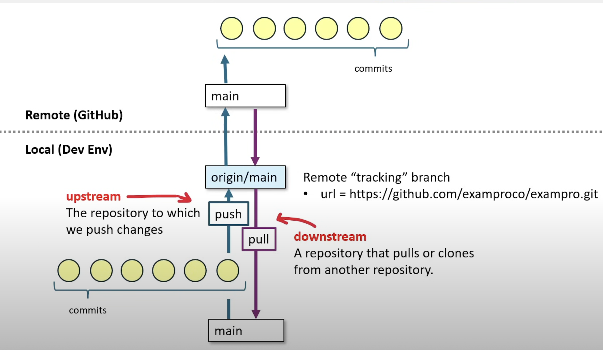
GitHub Flow
GitHub Flow is a light-weight workflow for multiple developers working on a single repository
- Create a Branch: For each new task or feature, create a new branch off the main branch.
- Add Commits: Make changes and commit them to your branch.
- Open a Pull Request: Start a discussion about your commits, reviewing code in the pull request.
- Discuss and Review: Share your pull request with teammates for feedback.
- Deploy: Test your changes in a production environment.
- Merge: Once your changes are verified, merge them into the main branch.
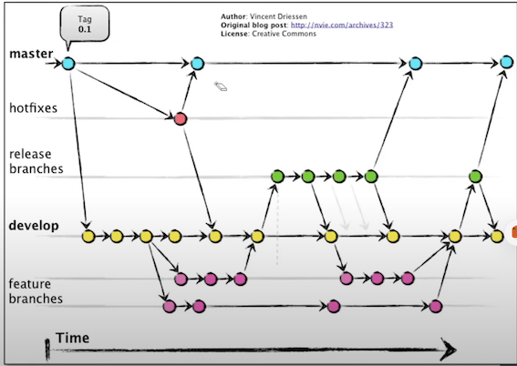
GitHuo CLI
The GitHub CLI is a command line interface to interact with your GitHub Account.
You can quickly perform common GitHub actions without leaving you developer environment
gh auth login
gh repo create github-examples --public
gh issue create --title "Issue title" --body "Issue body"
gh pr review --comment -b "interesting"
The GitHub CLI can be installed on Windows, Linux, and macOS
brew install gh
You can quickly install the CLI for GitHub Codespaces via Features:
"features": {
"ghcr.io/devcontainers/features/github-cli:1": {}
]
Core commands
gh auth / gh browse / gh codespace / gh gist / gh issue / gh org / gh pr / gh project / gh release / gh repo
GitHub Actions commands
gh alias / gh api / gh completion / gh config / gh extension / gh gpg-key / gh label / gh ruleset / gh search / gh secret / gh ssh-key / gh status / gh variable
Additional commands
gh cache / gh run / gh workflow
Basic Repo Navigation
Within a Github repo you'll have a navigation bar to the various feature of your GitHub repo:
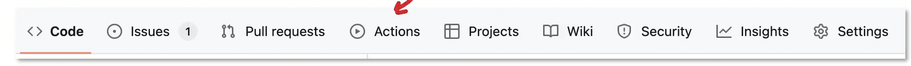
- • Code: The main tab where the repository's source code, files, and folders are located.
- • Issues: Tracks problems or ideas for the project, allowing collaboration and discussion.
- • Pull Requests: Used for managing contributions from other users, enabling code review and discussion before merging changes.
- • Actions: Manages continuous integration and continuous deployment (CI/CD) workflows.
- • Projects: A board for organizing and prioritizing work, similar to kanban or task management boards.
- • Wiki: A space for the project's documentation.
- • Security: Features security-related resources, including security policies and vulnerability reports.
- • Insights: Provides statistics and insights on the project's activity and contributions.
When you create a repo you choose a owner:
- Personal account
- An organization that you belong to
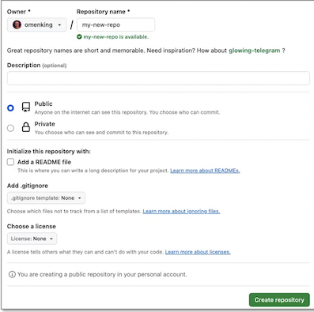
- You need to choose an available github repo name
- Names are unique based on the scope of the owner
You repo can either be public or private
You can quickly add a:
- Readme file
- gitignore file
- License file
Github CLI can be used to create a GitHub repo
gh repo create my-project --public --clone
Maintaining a repo
You can change your repo name, (but try not to because it can break external links and documentation pointing to a public repo)
- You can change the base branch (default branch).
- You can rename the default branch.
- "main" is the unspoken best practice for naming your base branch
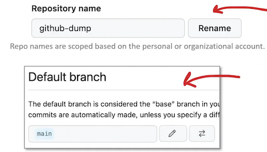
- You can opt-in-and-out of some features for your Github Repo
- Features will appear in the Github repo navigation bar
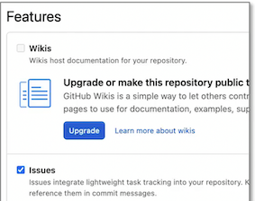
The Danger Zone contains actions you need to think twice about because they cannot be undone.
Change repo visibility
When you make a private repo private
- The code will be visible to everyone who can visit https://github.com
- Anyone can fork your repository.
- All push rulesets will be disabled.
- Your changes will be published as activity.
Disable Branch Protection Rules
- Branch protect rules are strict workflow rules like disallowing anyone pushing to main.
- You can disable all protections temporarily eg. For quick fixes
Transfer ownership
When you want someone else to be the owner of the repo.
Archive this repository
When the repo to be read-only.
Delete this repository
- When you want to delete your repo.
- Once its gone its gone, there is not trash bin you can pull it out of.
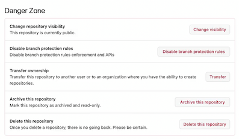
Repo Templates
Github Repo Templates is a feature for public repos that allow other GitHub users to make a copy of the contents of the template repo to use as starting point of their own repo.
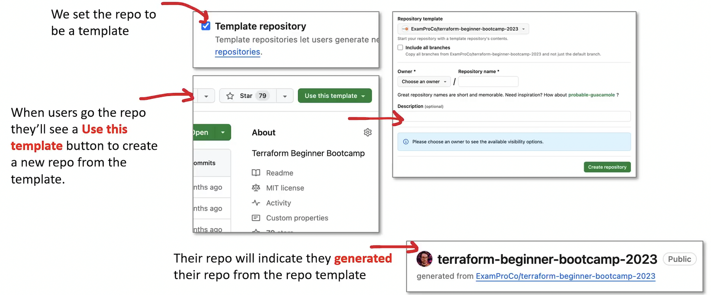
Templates are different from cloning because it's a clean repo with no previous history.
Cloning a repo
You can clone a repo programmatically three different ways:
1.HTTPS
git clone https://github.com/omenking/terraform-beginner-bootcamp-2023.git
2.SSH
git clone git@github.com: omenking/terraform-beginner-bootcamp-2023.git
Authorization is based on SSH keypair
you have to upload the Public key to your GitHub account
3.Github CLI
gh repo clone omenking/terraform-beginner-bootcamp-2023
Authorization is based on the credentials when did a gh login
You can also:
- Open in GitHub Desktop which will perform the clone for you
- Download a ZIP containing the contents of the repo
Creating branches
Using git we can create a new branch from an existing branch.
We then want to push upstream our branch to GitHub
git checkout -b staging
# change files, create commits
git push -u origin staging
-
is the short hand flag for
-set-upstream. -
Branches can be created from Issues.
-
The branch and issues will be associated/link
-
Branches can be directly created within GitHub Ul.
-
Branches can be created in GitHub Desktop
GitHub Releases
GitHub Releases allows you to create releases with release notes and linked assets such as zip source or binaries for specific platforms
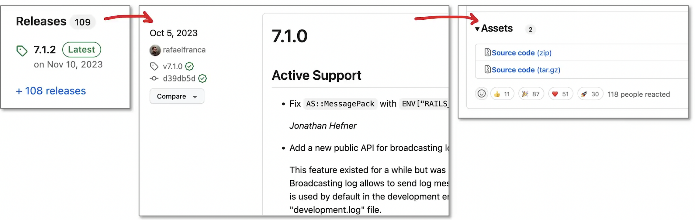
GitHub Packages
GitHub Packages is a platform for hosting and managing packages, including containers and other dependencies.
Pushing Docker container to GitHub Packages
Supported package registry:
- Javascript (npm package)
- Ruby (gems)
- Java (maven and gradle packages)
- Net (don't net packages)
- Docker images
GH_USERNAME=" andrew-wc-brown"
IMAGE NAME="hello-world"
VER="1.0.0"
# Sign-in to docker
echo $GH_TOKEN | docker login ghcr.io -u $GH_USERNAME --password-stdin
# Tag docker container
docker tag $IMAGE_NAME: $VER ghcr.io/$GH_USERNAME/$IMAGE_NAME:$VER
# Push to Docker Packages
docker push ghcr.io/$GH_USERNAME/$IMAGE_NAME:$VER
GitHub Actions could be used to build and then public packages to GitHub Packages
FROM alpine:latest
CMD echo "Hello World!"
docker build -t hello-world .
docker run hello-world
Pull Requests
A Pull Request (PR) is a formal process to put forth changes, that can be manually or automatically reviewed before its accepted into your base (main) branch
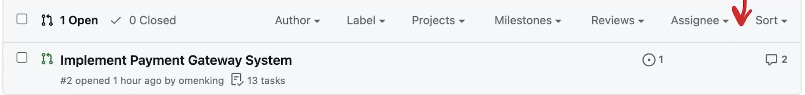
Benefits of a Pull Request
- Collaborative Review: Enhances code quality through team discussions and peer feedback.
- Change Tracking: Provides a record of code changes and related discussions.
- Automated Testing: Enables integration with tools for automated checks and tests.
- Controlled Integration: Manages safe and reviewed merging of code changes.
- Open Source Friendly: Simplifies contributions and collaboration in open-source projects.
A pull request is not a feature of git, but a workflow. Services like GitHub can automate the Pull Request workflow
Creating Pull Requests
We set the:
- Base - who we are going to merge into
- Head - the changes to pull in
We can use the Github CLI to create a pull request from a branch.
git checkout -b cool-feature-branch
git commit -am "Your commit message"
git push -u origin cool-feature-branch
gh pr create --base main --head cool-feature-branch
In the GitHub repo we navigation to Pull Requests
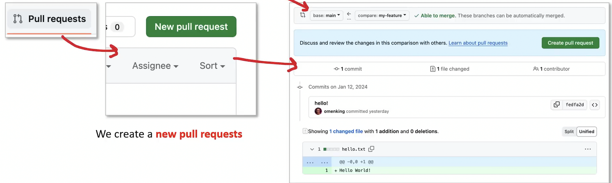
Pull Requests - Base and Compare
Base and Compare determines the direction of the merge for a pull request
Base is who you want to merge into
This is usually main branch or an environment specific branch
Compare is what will be merged into Base
- Compare is choosing a Head ref
- This usually a bug or feature branch
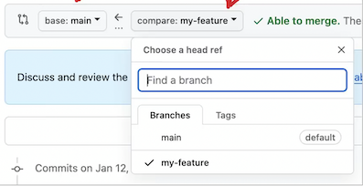
You can also compare across forks this is how a fork stays up to date, or how forks can suggest you to accept their changes.
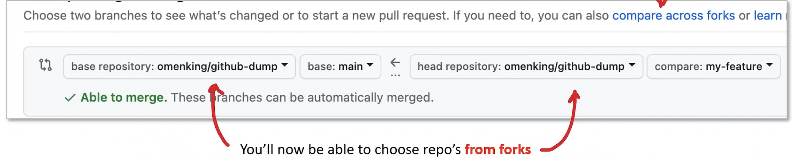
Draft Pull Requests
A Draft Pull Request on GitHub is a feature that allows you to open a pull request but mark it as a work-in-progress (WIP).
Use case for Draft Pull Requests
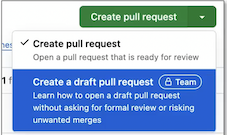
Draft Pull Requests is a feature only for Github Organizations Teams
Use case for Draft Pull Requests
- Indicating Work-in-Progress: Communicates that the pull request is not ready for review or merging.
- Preventing Premature Merging: Ensures incomplete work is not accidentally merged.
- Facilitating Early Feedback and Collaboration: Allows for early sharing and discussion of code changes.
- Continuous Integration Testing: Enables Cl tests during the development process.
- Transitioning to a Ready State: Easy switch from draft to ready for final review and merging.
- Organizing Work and Priorities: Helps in managing and tracking ongoing work in large projects.
Linked Activity within a Pull Request
Supported Keywords
close closes closed fix fixes fixed resolve resolves resolved
The pull request must be on the default branch.
Pull Request Statuses
Open
The default status when a pull request is created. It's open for discussion and review.
Draft
Indicates the pull request is a work-in-progress and not yet ready for review.
Closed
The pull request has been closed without being merged. This status is used when the proposed changes are no longer needed or if the branch has been rejected.
Merged
- The pull request's changes have been merged into the target branch.
- This status indicates a successful conclusion of the pull request process.
Changes Requested
This status is used during the review process when a reviewer requests changes before the pull request can be merged.
Review Required
- Indicates that the pull request requires a review before it can be merged.
- This status is common in repositories where reviews are a mandatory part of the workflow.
Approved
The pull request has been reviewed and approved for merging by the required number of reviewed
Conflict
Indicates that there are conflicts between the pull request's branch and the target branch that ne to be resolved before merging.
Ready for Review
A pull request initially marked as draft can be changed to this status once it's ready for review.
Codereviews with CODEOWNERS file
CODEOWNERS Github repo specific file to define individuals or teams that are responsible for specific code in a repository
CODEOWNER files uses a similar syntax to .gitignore.
When a pull request is opened that modifies any files matching a pattern in the CODEOWNERS file, GitHub automatically requests a review from the specified code owners.
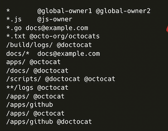
The codeowner files goes in either the project root, github or docs directory.
Required Reviewers
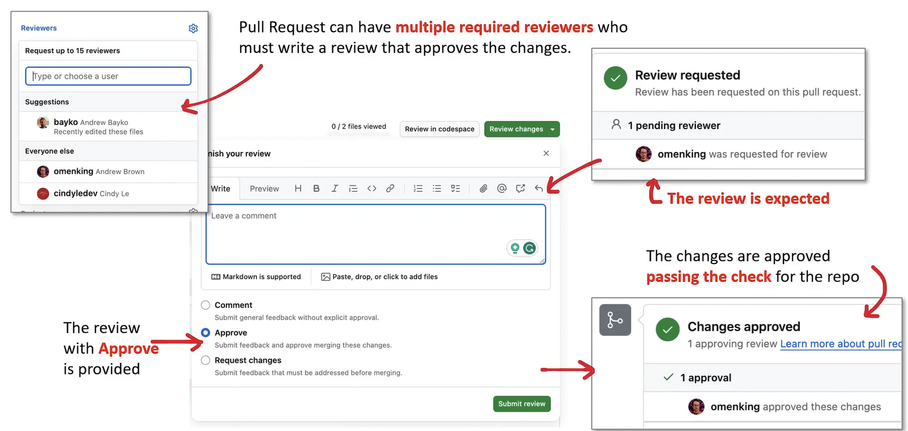
Pull Request Templates
Pull Request Templates are similar to Issue Templates
They will populate the pull request textarea with the specified template
You create a a file in the
.github/pull_request_template.md
Technically you can create multiple Pull Request Templates in a folder called .github/PULL_REQUEST_TEMPLATE
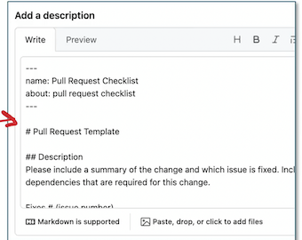
GitHub kind-of supports multiple Pull Requests Templates but you have to assemble your own URL with a querystrings, so its not as convenient to use as multiple Issue templates.
Source-Control-Strategy Authentication methods
Authentication and credential strategies
Credentials are specific to a user's identity.
For example, their individual username and password, PIN, or biometric information.
Every user, including IT administrators, teachers, staff persons, and students has credentials.
An authentication method is the way a user proves their identity to a system.
For example, a user inputs their credentials in a sign-in screen or via the Microsoft Authenticator app in which they have set up their account.
Authentication methods can also be broken down into categories, or types, such as:
- Sign-in authentication
- Password reset authentication
- Multi-factor authentication
Authentication and credential strategies
Authentication Types
Authentication methods vary widely, from traditional to advanced:
Common Types:
- Passwords and PINs: Common but can be risky for security.
- Picture Passwords and Pattern Locks: Offer memorability and simplicity.
Biometric Authentication:
- Facial, Fingerprint, Retinal: Provide secure, unique user identification.
Passwordless Authentication
Emphasizes security and convenience by eliminating traditional passwords, removing the hassle of memorization and mitigating threats like phishing.
Microsoft's Methods:
- Windows Hello for Business: Uses biometrics/PIN for secure sign-ins and SSO.
- Microsoft Authenticator App: Enables phone verification with notifications and biometrics/PIN.
- FIDO2 Security Key: Allows password-free logins with external/internal keys.
Password Reset Authentication
Self-Service Password Reset (SSPR) with Microsoft Entra ID lets users change their own passwords without help desk assistance, cutting down on support costs and improving security and efficiency.
Key Features:
- Self-Service: Users can change or reset their passwords without administrator or help desk assistance.
- Security Enhancement: SSPR improves organizational security by allowing users to promptly address account lockouts or compromises.
Compliance with Password Policies:
SSPR enforces Microsoft Entra password policies regarding complexity, length, expiration, and character use, ensuring standardized security measures across the board.
Authentication and credential strategies
Multi-factor Authentication (MFA)
MFA is a security measure that requires more than one piece of evidence to confirm your identity when logging into an account, like a code from your phone in addition to your password.
MFA Methods:
- SMS Text Message: A code sent to the user's phone.
- Phone Voice Call: Answering a call to confirm identity.
- Microsoft Authenticator App: A code or biometric verification through the app.
- OAUTH Hardware Token: Using a physical token for authentication.
Set Up Auth for External Services
- Outh is a protocol for authorization that lets users give third-party services like GitHub or Jenkins permission to use their information without sharing their login details.
- It ensures secure connections, making authentication and permissions straightforward.
Use Personal Access Tokens
Personal Access Tokens (PATs) provide a way for users to create special tokens to access DevOps tools. They're especially handy for command-line interactions or scripts needing direct access to these services.
Apply Role-Based Access Control
Role-Based Access Control (RBAC) sets up detailed access rules based on users' roles and what they're allowed to do. It makes sure people have just the right access they need for their work, keeping sensitive information secure.
Git LFS
- Git LFS (Large File Storage) is an open-source extension for Git that helps handle large files more efficiently.
- It does this by using small text pointers in your Git repository to represent the large files, while keeping the real file content stored elsewhere. This method keeps your repository from getting too large and slowing down.
Install Git LFS
- Install: Go to the Git LFS website, download, and install it.
- Configure: Use the command
git Ifs installto set up Git LFS on your
Setting Up Git LFS in Your Repository
- Track Large Files: Decide which file types to manage as large files. E.g., Use git Ifs track "*.mp4" for MP4 files
- Add Attributes File: Add the .gitattributes file to your repo with
git add .gitattributes
Commit and Push: Save the changes with git commit -m "Configure Git LFS”`` and update the remote repository usinggit push`.
Managing Large Files
Add Files: Run git add. or git add ‹filename> to stage large files.
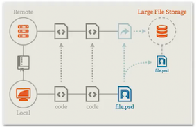
Commit and Push: Use git commit -m "Add large file”`` andgit push` to commit and send files to the repo
Git-fat
git-fat is another tool for managing large files in Git repositories. It's a Python script that keeps large files separate from your Git repository, while maintaining references to those files within the repository.
Setting Up git-fat
- Install Python: Make sure Python is installed on your system.
- Install git-fat: Install git-fat using pip with pip install
Initializing git-fat in Your Repository:
- Initialize git-fat: Run
git-fat initin the root of your repository. - Track Files: Define large file types in a
.gitfatfile. For example, to track mp4 files, you might add*.mp4to the file. - Commit gitfat: Add the
.gitfatfile to your repo withgit add .gitfatand then commit it usinggit commit -m "Initialize git-fat and track large files”
Managing Large Files with git-fat:
- Add Large Files: Use
git fat add < file >to stage large files for git-fat. - Commit and Push: Commit with
git commit -m "Add large file”`` and upload withgit push`
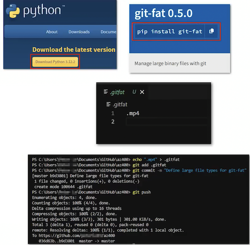
Git Scalar
Git Scalar is an extension that helps Git efficiently manage large repositories, addressing the slowness and space issues associated with downloading a repository's entire history and files.
Git Scalar solves this by allowing you to download only the files you need. It works well with Git LFS
Configure Git Scalar for a Specific Path
- Install Git LFS: Install Git LFS by following the steps provided in its official documentation.
- Scalar Initialize Git LFS in Your Repository: In your repository's directory, run git Ifs install
Create and Configure gitattributes File: In the root directory of your repository, create a .gitattributes file.
To enable Git Scalar for files under the my/large/files/directory, add the following line to .gitattributes: my/large/files/* filter=Ifs diff=Ifs merge=Ifs -text
This configuration tells Git LFS to manage files in my/large/files/, using Git Scalar for efficient handling.
Commit and Push the .gitattributes File:
Commit the gitattributes file to your repository with: git add gitattributes
Then git commit -m "Configure Git LFS and Git Scalar for specific
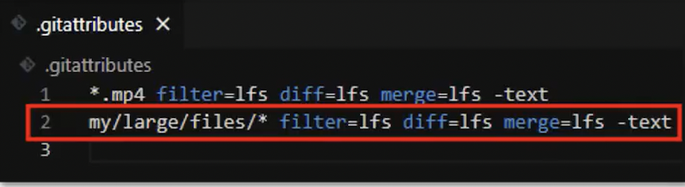
Push the changes to your remote repository: git push
Git submodule add
Cross-Repository Sharing with Git:
Sharing code across different repositories is common for reusing code, modularization, or separating components of an application. Git facilitates this with the following method:
Submodules:
Git submodules let you integrate a separate Git repository within another repository's directory structure.
It's especially handy for incorporating a particular version of an external library or for sharing common libraries across various projects.
To add a submodule:
git submodule add < repository-url> <path> <path>
Example: git submodule add https://github.com/example/lib.git externals/lib
Advantages of Submodules:
Manage shared code by referencing specific commits, and keeps the main project separate from external dependencies.
Using Git submodules necessitates managing updates individually and maintaining consistency across projects that share them.
Git subtree
Git subtree is a tool that helps you include code from one repository into a specific folder of another repository.
It's a simpler alternative to submodules, which is another way to incorporate external code but can be a bit complex to handle.
With Git subtree, you can both bring in external code and send updates back to the original code source if needed.
To add a subtree, you use a command that looks like this:
git subtree add --prefix=folder-name repository-url commit-or-branch
--prefix=folder-nameis where you specify the folder in your main project where you want to add the external code.repository-urlis the web address of the external code you're adding.commit-or-branchis the specific version of the external code you want to use, which can be a commit ID or a branch name.
Git subtree streamlines project workflow by integrating external code directly, ensuring it's immediately accessible upon cloning without additional steps.
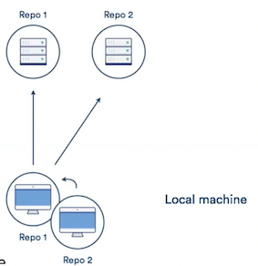
Workflow Hooks
Workflow hooks are essential tools in the Microsoft DevOps ecosystem, designed to automate and refine development workflows, leading to better efficiency and productivity
Workflow hooks act as triggers for executing actions or scripts at specific points in a DevOps workflow, crucial for maintaining code quality, automated testing, deployment, and integrating external services into the process.
In the context of build and release cycles, workflow hooks are particularly valuable.
They enable developers to automate tasks like unit testing, documentation compilation, or deployment to testing environments with each new build or release, streamlining these processes.
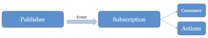
Workflow Hooks with Azure DevOps
Azure DevOps stands out in offering comprehensive tools and services for managing the DevOps lifecycle, including implementing workflow hooks through service hooks.
These service hooks allow for connecting your DevOps pipeline with external services or initiating custom actions in response to various events, such as new build completions, work item updates, or pull requests.
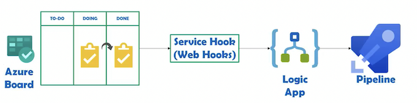
Other Tools and Services for Workflow Hooks
Besides Azure DevOps, Microsoft offers other tools and services for implementing workflow hooks, including GitHub Actions, Azure Logic Apps, and Azure Functions.
The key to leveraging workflow hooks effectively is to identify the crucial events and actions within your workflow and use the appropriate tools for implementation.
Workflow Hooks with Azure DevOps
Create a service hook in Azure DevOps for automating actions such as notifications after a successful build
- Access Project Settings: Open your project in Azure DevOps and navigate to 'Project Settings' at the bottom of the project sidebar.
- Open Service Hooks: In the 'General' section, find and click on
'Service Hooks’. - Create Subscription: Initiate the creation process by clicking the `'+ Create subscription’`` button.
- Select Notification Service: Pick the service for notifications, like Microsoft Teams or Slack, and set the event trigger to
'Build completed’ - Set Trigger Filters: Customize the trigger filters by setting the build status to `’succeeded'``.
- Configure Action Details: Specify the notification message and destination, such as the recipient channel in Slack or an email address.
- Finalize and Test: Save the service hook with the 'Finish' button and conduct a test to confirm it operates after a build is successful.
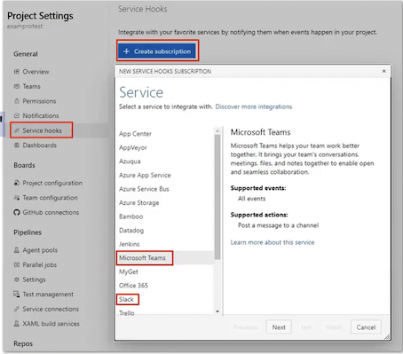
Branch strategy
Trunk-based development (TBD) employs a single, central branch known as the "trunk" or "master," ocusing on frequent, small updates for continuous integration and stability.
Steps to Implement TBD:
- Establish the Trunk: Define a single branch (the "trunk") as the central code path.
- Direct Commits: Encourage team members to commit small changes directly to the trunk frequently.
- Continuous Integration: Perform builds and tests on the trunk often to catch issues early.
- Automate Deployment: Set up automatic deployment to streamline updates.
Here's an example of how you can create a trunk branch using Git:
- git branch trunk
- git checkout trunk
Feature branches enable developers to work independently on new features or fixes,
keeping changes separate from the main code until they're ready to merge. This approach allows for focused development and testing of specific functionalities without disruption.
Steps to Use Feature Branches:
- Create Feature Branch: Initiate a new branch for each feature or fix.
- Naming Conventions: Assign descriptive names reflecting each branch's purpose.
- Stay Updated: Merge updates from the main branch periodically.
- Thorough Testing: Conduct extensive tests before merging back to the main branch.
Here's an example of how you can create and switch to a feature branch using Git:
-
git branch feature/new-feature
-
git checkout feature/new-feature
Release branches help prepare and stabilize a codebase for a new release, focusing on bug fixes and final adjustments. They are created from the main branch, enabling ongoing development while ensuring the upcoming release is thoroughly tested and polished.
Steps for Managing Release Branches:
- Create a Release Branch: Start a branch from the main branch for new releases.
- Focused Adjustments: Make all necessary tweaks and bug fixes on this branch.
- Ensure Stability: Test thoroughly and maintain continuous integration.
- Final Merge: Merge the release branch back into the main branch once ready.
Here's an example of how you can create a release branch using Git:
- git branch release/release-1.0
- git checkout release/release-1.0
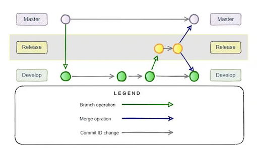
Branch policies
Branch policies in Microsoft DevOps Solutions are rules that govern how code is contributed to a repository.
They enforce certain conditions that must be met for pull requests to be merged, ensuring that code is reviewed, tested, and linked to relevant project tasks.
Key Branch Policies to Implement
Require Approving Reviews: Mandate that each pull request receives at least one approving review from designated reviewers before it can be completed. This guarantees that all code changes are scrutinized by another developer, promoting better code quality and reducing the risk of errors.
Link Work Items: Ensure that every pull request is associated with a corresponding work item.
This linkage provides traceability and accountability, making it easier to track why changes were made and ensuring they align with the project's goals.
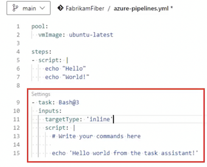
Build Validation: Configure this policy to require that changes in a pull request successfully pass automated builds and tests. This helps to identify any compilation issues or test failures early, preventing problematic code from reaching the production
Branch policies
Additional Branch Policies for Enhanced Workflow
- Enforce Minimum Review Time: Ensure pull requests remain open for a set period to prevent rushed reviews and promote thorough evaluations.
- Require Task Completion: Require the completion of specific tasks, such as addressing code comments or updating documentation, before merging.
- Automate Code Formatting and Style Checks: Use linters or similar tools to automatically enforce coding standards and reduce manual review efforts.
Benefits of Using Branch Policies
- Improved Code Quality: Automated checks and mandatory reviews help minimize bugs and errors.
- Better Team Collaboration: Mandatory reviews and work item links foster collaboration and keep team goals aligned.
- Efficient Workflow Management: Automating parts of the review process speeds up development while maintaining high quality.
Branch protection
Branch protections provide an additional layer of security by enforcing rules on branch manipulation, preventing accidental modifications or unauthorized changes.
Key Branch Protections to Implement
Require a Minimum Number of Reviewers: Set branches to require a specific number of reviewers for all changes. This ensures multiple evaluations of the code, which facilitates collaboration and reduces the risk of defects.
Restrict Who Can Push to the Branch: Limit direct push access to protected branches, allowing only authorized individuals or teams to make changes. This control helps prevent unauthorized modifications and maintains code integrity.
Enforce Merge Checks: Specify criteria that must be met before merging a pull request.
These include build validation, work item linking, and branch permissions compliance, to ensure only approved changes merge.
Branch protection
Pull Request Workflow with Branch Policies and Protections
Create a Feature Branch: Developers branch off the main branch to work on new features or fixes.
Implement Changes and Create a Pull Request: Developers commit changes to their branch and open a pull request to merge them into the main branch.
Assign Reviewers and Await Feedback: Reviewers inspect the code, provide feedback, and approve. Branch policies ensure pull requests need the required approvals to proceed.
Address Feedback and Iterate: Developers respond to feedback, update their code, and trigger the build validation process. Reviewers reassess the updated changes.
Complete the Pull Request: After securing approvals and passing merge checks like work item linkage and build validation, the pull request is completed, and changes are merged.
Azure Pipelines
Azure Pipelines
Azure Pipelines is a cloud service that automates the Cl/CD pipeline for software development, offering support for multiple languages, platforms, and cloud environments, and integrating with a wide range of tools and services.
- Automation for CI/CD: Azure Pipelines provides a fully featured continuous integration (CI) and continuous delivery (CD) service for applications.
- Platform and Language Agnostic: Supports any language, platform, and cloud. Integrates with Azure, AWS, and GCP.
-
Extensibility: Offers integration with popular tools and services in the software development ecosystem.
-
Supports Open Source and Private Projects: Available for projects hosted on GitHub and other platforms.
- Rich Integration: Integrates with GitHub Checks and offers extensive reporting capabilities.
- Parallel Jobs and Environments: Allows running multiple jobs in parallel and deploying to multiple environments including Kubernetes, VMs, and Azure services.
Define Your Pipeline
YAML Syntax: Azure Pipelines uses YAML syntax to define build, test, and deployment tasks.
Step-by-Step Process: The documentation guides through the process of setting up your first pipeline, including initiating builds, packaging applications, and deploying.
Key Concepts
- Pipelines: A complete CI/CD pipeline defined by stages, jobs, steps, and tasks.
- Stages: A way to organize jobs, typically used to separate build, test, and deploy processes.
- Jobs and Steps: Jobs group steps, which are individual tasks like scripts or Azure Pipeline tasks.
Azure Pipelines
Supported Languages and Frameworks
- Wide Language Support: Works with any language including NET, Java, JavaScript, Node.js, Python, PHP, Ruby, C/C++, and more.
- Framework and Platform Support: Supports Windows, Linux, and macOS builds. Can deploy to various platforms including Azure, Kubernetes, VMs, and on-premises servers.
Extensibility
- Marketplace Extensions: A rich marketplace of extensions to extend the functionality of Azure Pipelines.
- Custom Tasks: Developers can create custom tasks to meet unique requirements.
Pricing
Free Tiers Available: Offers free CI/CD minutes to projects, with additional minutes available for purchase. Pricing varies based on parallel job needs and cloud providers
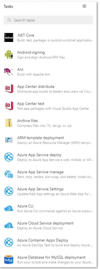
GitHub repos with Azure Pipelines
Integrating GitHub repositories with Azure Pipelines can significantly enhance the automation of build and release processes within a DevOps workflow.
Step 1: Create a New Project in Azure DevOps
Create Project: Click the "New project" button. Provide the necessary details for your project such as name and description, and then click on the "Create" button to finalize the project creation.
Step 2: Connect Your GitHub Repository to Azure Pipelines
Access Pipelines: In your new Azure DevOps project, navigate to the "Pipelines" section.
Initialize Pipeline: Click on the "New pipeline" button.
Select Source: Choose GitHub as the source for your pipeline. You will need to authenticate and authorize Azure Pipelines to interact with your GitHub account.
Configure Pipeline: Select the specific branch or repository to build and deploy.
Activate: After setting your configuration, click "Save and run" to save the settings and trigger the initial build.
Step 3: Build and Deploy Your Application
Build Configuration: Azure Pipelines will execute the build of your application according to the directives specified in your pipeline configuration file (usually a YAML file). This may include tasks like compiling code, running tests, and packaging artifacts.
Release Tasks: Post-build, configure the pipeline to deploy your application to various environments, such as staging or production. This can involve deploying to services like Azure App Service or Azure Kubernetes Service.
Deployment Customization: Utilize features like environment variables, secrets, and approvals to tailor and secure your deployment process.
GitHub repos with Azure Pipelines
Benefits of Integrating GitHub with Azure Pipelines
Continuous Integration (CI): Ensures that any changes in the connected GitHub repository trigger automatic builds, keeping your application updated and validated after every commit.
Code Visibility: Enhances traceability by linking GitHub pull requests and commits directly to their respective build and release pipelines.
Artifact Management: Facilitates management and storage of build artifacts in Azure Pipelines or with external services such as Azure Artifacts and Docker registries.
Continuous Delivery (CD): Automates the deployment process across different environments, minimizing manual intervention and promoting consistent releases.
Release Approvals: Implements controls and checks through configurable approvals before promoting builds to production environments.
Configure permissions in source control repo
Managing access and security through permissions is critical in a DevOps environment to ensure that team members have appropriate access for their roles.
Configuring Repository-Level Permissions
- Access Project: In Azure DevOps, navigate to your project and go to the "Repos" section.
- Repository Settings: Select your repository and click on the "Settings" tab, then "Repositories" in the submenu.
- Modify Security: Choose the repository you want to adjust and click on the "Security" tab on the right.
- Manage Access: Add users or groups to the pre-defined security groups ("Contributors," "Readers," "Administrators") or create new ones.
- Set Permissions: Use the "Add" button to grant the appropriate permissions like "Read," "Contribute," and "Administer" to selected users or groups.
Branch-Level Permissions Configuration
- Repository Access: Open your repository in Azure DevOps.
- Branches: Go to the "Branches" tab and choose the branch you need to configure.
- Security Settings: Click on "Security" to manage permissions for that branch.
- Define Permissions: Assign permissions to groups or users, overriding repository-level permissions if necessary.
Configuring File-Level Permissions
- Locate File: Within the repository, navigate to the specific file you want to manage.
- File Permissions: Click the three-dot icon next to the file and choose "Manage permissions."
- Control Access: Add groups or users and set the desired access levels just as you would at the repository or branch level.